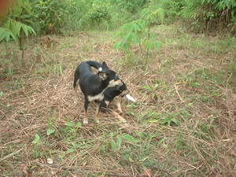

ahew 
/ʔagɔw/
v_rt.
“take-away”
vt.
for someone (eg-ahew, mig-ahew/in-ahew, agent, eg><ø-) to snatch or grab something (including someone else's property, spouse, or position) (eg-ahawen, in-ahew/mig-ahew/pig-ahew, theme, eg><en-) from someone (eg-ahawan, in-ahawan/mig-ahawan/pig-ahawan, location, eg><an-)
Kenà a eg-ahew te binulalu ne igpakeen te batè.
I will not take away the porridge that is to be fed to the baby.
O. Syn. ileg
Eng. snatch; seize; grab; take; plunder; hold-up; kidnap; abduct; capture; take control; overcome
Tag. agáwin; sunggabán
Ceb. ilog; bira
Ilo.: agáwen
OCM: Acquisition and Relinquishment of Property (425)
Online dict status: -
Usage level: M
v.
for someone (egpaag-ahawey, migpaag-ahawey/impaag-ahawey, agent, eg><ø-pA><ey-rdpCVC-) to snatch back and forth from each other
Sabeka rè ne timman ne paan ka neuyan te amey ni Aha te peg-ulì din sikan naa ka migpaag-ahawey ka me anak din te paan.
Aha's father brought home only one loaf of bread that's why his children grab it from each other.
Eng. snatch back and forth
Online dict status: -
Usage level: R
Updated by: RJH,JLM,RJH,TME,AAA,RUL,QDL,RUL,RJH
Last updated: 07/Jun/2016
"ahawa" in text "Examples of Anit"
This page last updated: 28-Dec-2019
Copyright © 2009-2014, Matigsalug Language Christian Association, Inc